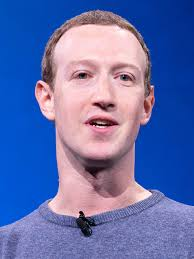

Fundador de Facebook y CEO de Meta Platforms
Mark Elliot Zuckerberg es un programador, empresario y filántropo estadounidense conocido por ser el cofundador de Facebook, una de las redes sociales más grandes del mundo. Actualmente es el CEO de Meta Platforms, empresa matriz de Facebook, Instagram, WhatsApp y otras tecnologías enfocadas en el metaverso.
Mark Zuckerberg nació el 14 de mayo de 1984 en White Plains, Nueva York. Creció en una familia de clase media-alta en Dobbs Ferry. Su padre, Edward Zuckerberg, es dentista, y su madre, Karen, es psiquiatra. Desde joven mostró un gran interés por la computación y el desarrollo de software.
A los 12 años, desarrolló un programa de mensajería llamado "ZuckNet" para conectar las computadoras de su casa con la oficina dental de su padre.
Asistió a la Academia Phillips Exeter, una prestigiosa escuela preparatoria en New Hampshire. Allí destacó tanto académicamente como en esgrima. También desarrolló programas como un reproductor de música inteligente llamado Synapse.
En 2002, ingresó a la Universidad de Harvard, donde estudió Psicología e Informática. Fue allí donde nació la idea de Facebook.
En febrero de 2004, Zuckerberg lanzó "TheFacebook" desde su dormitorio en Harvard, junto a sus compañeros Eduardo Saverin, Dustin Moskovitz, Andrew McCollum y Chris Hughes. Inicialmente fue una red exclusiva para estudiantes universitarios.
La plataforma creció rápidamente, expandiéndose a otras universidades y luego al público general. En 2005, recibió inversiones importantes, incluyendo la de Peter Thiel, cofundador de PayPal.
Facebook se convirtió en una de las empresas tecnológicas más influyentes del mundo. Zuckerberg se convirtió en multimillonario a los 23 años. La compañía adquirió otras plataformas importantes:
En 2012, Facebook salió a bolsa con una de las mayores ofertas públicas iniciales (IPO) en la historia tecnológica.
En 2021, Zuckerberg anunció que Facebook cambiaría el nombre de su empresa matriz a Meta Platforms, Inc. para reflejar su nueva visión: liderar el desarrollo del "metaverso", un entorno digital inmersivo e interactivo impulsado por realidad virtual (VR) y aumentada (AR).
Meta ha invertido miles de millones de dólares en el desarrollo del metaverso a través de la división Reality Labs y productos como Meta Quest.
Facebook y Zuckerberg han estado involucrados en numerosas controversias, incluyendo:
A pesar de ello, Zuckerberg ha defendido el papel de Facebook como plataforma abierta y global, promoviendo la libertad de expresión y la conectividad.
En 2015, Mark y su esposa Priscilla Chan fundaron la **Chan Zuckerberg Initiative**, con el compromiso de donar el 99% de sus acciones de Facebook a causas benéficas. Sus áreas de enfoque incluyen:
Zuckerberg está casado con la pediatra Priscilla Chan desde 2012. Tienen tres hijas. Aunque es una de las personas más ricas del mundo, mantiene un estilo de vida relativamente modesto y es conocido por su vestimenta simple: camiseta gris y jeans.
Mark Zuckerberg ha sido una figura central en la revolución digital del siglo XXI. Su trabajo ha conectado a miles de millones de personas en todo el mundo, pero también ha generado intensos debates sobre privacidad, tecnología y sociedad. Continúa liderando Meta con una visión de un internet más inmersivo, social y descentralizado.